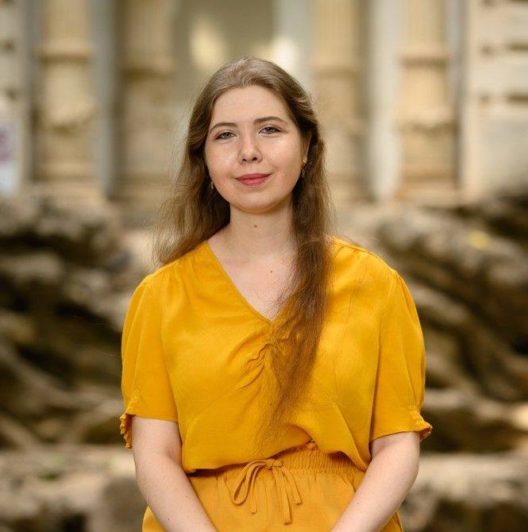

Oana Vardianu

Oana Vardianu (n. 2002, București) este o tânără compozitoare și contrabasistă, absolventă a specializării Compoziție Clasică la Universitatea Națională de Muzică din București și este în prezent masterandă la aceeași instituție, la clasa prof. univ. dr. dr. H.C. Dan Dediu. Oana Vardianu face parte din noua generație de compozitori români, contribuind la consolidarea prezenței feminine în muzica contemporană, cu lucrări care ating teme spirituale și morale, inspirându-se din muzica tradițională românească și bizantină.
Și-a început pregătirea muzicală la vârsta de 4 ani cu pianul, urmând ca aceasta să studieze vioara la vârsta de 7 ani și contrabasul la vârsta de 15 ani, la Liceul de Arte „Ionel Perlea” din Slobozia. Din clasa a V-a a participat și a fost premiată la concursuri la București, Iași, Buzău și la olimpiadele naționale, la secțiunea Studii de Teorie Muzicală, dar și cu Premiul Special oferit de prof. univ. dr. Iulia Bucescu. A descoperit secretele compoziției clasice în clasa a XI-a, avându-l ca mentor pe compozitorul și dirijorul conf. univ. dr. Bogdan Vodă.
Lucrările sale, în prezent peste 40, sunt interpretate de artiști și ansambluri prestigioase (Cristian Măcelaru, Kaspar Zehnder, Royal Philharmonic Orchestra, National Philharmonic of U.S.A., Romanian Chamber Orchestra, Cvartetul ConTempo, Corul de cameră „PRELUDIU – Voicu Enăchescu” etc.) pe scene din România și din străinătate, precum și la festivaluri de muzică nouă de renume (Zilele Muzicii Noi din Izmir, Ma Région Virtuose, Săptămâna Internațională a Muzicii Noi, Festivalul Internațional MERIDIAN, Festivalul Internațional „Remus Georgescu” etc.). Lucrările sale au fost, de asemenea, premiate la mai multe concursuri naționale și internaționale de compoziție (Concursul Național de Compoziție „Ștefan Niculescu”, Concursul Național de Creație Corală – Coraliada etc.) și selectate în cadrul apelurilor pentru partituri (Romanian Chamber Orchestra, AUFTAKT, ForestAria). În plus, a participat la numeroase cursuri de compoziție și ateliere, fiind apreciată de Sungji Hong, Xiaoyong Chen, László Tihanyi, Liviu Marinescu, Vasile Șirli, Sebastian Androne-Nakanishi, Cristian Lolea. Este afiliată la UCMR-ADA din 2015, la Secția Vocală a UCMR din 2024 și la ARFA și Secția Română a ISCM din 2025.
Și-a finalizat studiile de contrabas, după terminarea liceului, la Universitatea Națională de Muzică din București, cu conf. univ. dr. Săndel Smărăndescu, și a colaborat de-a lungul timpului ca contrabasistă cu Orchestra Operei Naționale București, Orchestra de Cameră Radio, Orchestra Medicilor „Dr. Ermil Nichifor”, Ansamblul de Muzică Veche „Dimitrie Cantemir”, precum și în alte proiecte de factură clasică și nu numai (Cine-concert „Orizontul Doamnei B”, în dublul rol de compozitoare și interprete; Bruce Dickinson - Muzica lui Jon Lord și Deep Purple cu Orchestra de Film din București dirijată de Paul Mann - Sala Palatului, 15.03.2023).
În așteptarea primăverii
Așa cum anticipă titlul, am compus lucrarea În așteptarea primăverii ca un moment mai degrabă de introspecție a sentimentelor pe care primăvara le poate transmite, și nu ca o oglindire a anotimpului în muzică. Prin această alegere, muzica descrie impresii și stări, nu peisaje, generând astfel o lume sonoră ludică, prin sugestia cântecului păsărilor, și în același timp parfumată. În plus, prin inserarea temei cântecului liric Iubita mea, floare mîndră , având ca sursă Bucovina, am onorat patrimoniul Cazinoului din Vatra Dornei, completând în același timp imaginea primăverii cu pitorescul. În timp ce cvartetul de chitare este ansamblul principal pentru desfășurarea muzicii, banda o completează prin elemente concrete precum ciripit de păsări, șuierat de vânt sau ticăit de ceas. Astfel, discursul ezoteric al cvartetului de chitare se îmbină cu cel palpabil al benzii, completându-se una pe alta și generând tabloul complet: dominanța treptată a primăverii, venind după iarnă, și disiparea ei în lumină prin apariția verii.